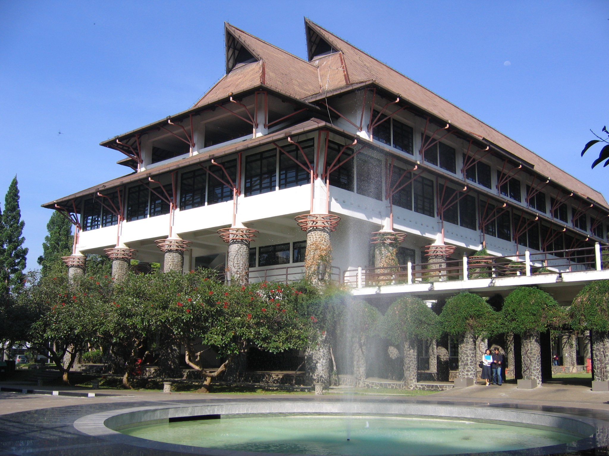

Sejarah STEI ITB
Sekolah Teknik Elektro dan Informatika Institut Teknologi Bandung, biasanya disingkat menjadi STEI ITB, adalah salah satu fakultas yang ada di ITB. Fakultas yang masih relatif baru ini (didirikan pada 1 Januari 2006) adalah hasil gabungan departemen program studi Teknik Elektro dan Teknik Informatika ITB.
Fakultas ini bergerak di bidang sistem elektronika dan informatika yang sedang dibutuhkan banyak orang di revolusi industri 4.0. Keberadaan fakultas ini mendukung pernyataan di atas bahwa ITB berperan dalam memajukan peradaban bangsa Indonesia. Fakultas ini termasuk salah satu fakultas yang prestigius tidak hanya di ITB, namun juga di Indonesia, dilihat dari rerata standar penerimaan mahasiswa baru pada sistem penerimaan SNMPTN maupun SBMPTN. Faktor lainnya adalah program studi yang telah terakreditasi oleh BAN-PT, bahkan akreditasi internasional ABET, dalam bidang Engineering Accreditation Commission dan Computing & Engineering Accreditation Commissions.
Program studi yang ada pada awalnya adalah program studi Teknik Elektro dan Teknik Informatika. Setelah itu, pada tanggal 26 November 2008, ditambahkan tiga program studi baru, yaitu program studi Teknik Tenaga Listrik, Teknik Telekomunikasi, dan Sistem dan Teknologi Telekomunikasi. Setelah itu, pada tahun 2015, ditambahkan satu program studi baru yaitu Teknik Biomedis. Selain itu, terdapat juga program magister teknik (S2) dan program doktor (S3).